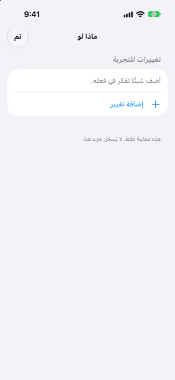

الدليل › التخطيط
ماذا لو
جرّب عملية شراء أو قرضًا أو تأخرًا في الدفع قبل أن تقوم بها.
ماذا لو هو المكان الذي تجرّب فيه التغيير قبل أن تجعله: أنفق مبلغًا في تاريخ، أو استلم مبلغًا، أو استبعد دفعة، أو حمّل نفسك خطة أقساط. يقارن Damla توقّعك مع التغيير وبدونه، لتعرف ماذا سيفعل بأدنى نقطة وبالمبلغ الآمن للإنفاق قبل أن تلتزم.

متى تستخدمه
- أنت تفكر في عملية شراء كبيرة لمرّة واحدة وتريد أن تعرف أثرها على الأسابيع المحيطة بها.
- أنت تفكر في خطة أقساط وتريد أن ترى القسط الشهري في توقّعك قبل الموافقة عليه.
- قد يتأخر وصول دخل، أو قد تترك فاتورة دون سداد، وتريد أن ترى ما يكلّفك ذلك.
- من المتوقع وصول مال في تاريخ غير موجود في دفاترك بعد، وتريد أن يُحسب.
خطوة بخطوة
- افتح التوقّع من مخطط رصيدك القادم على شاشة اليوم، وانقر ماذا لو أعلى اليمين.
- انقر إضافة تغيير.
- اختر النوع في الأعلى: إنفاق أو استلام أو تخطٍ أو أقساط.
- لـ إنفاق أو استلام: سمِّه تحت ماذا، وأدخل المبلغ، واختر التاريخ، واختر الحساب الذي يكون التغيير مدفوع منه أو يذهب إلىه.
- لـ تخطٍ: اختر تحت استبعاد أي دفعة أو خطة متكررة تريد استبعادها — دخل أو فاتورة، أو خطة أقساط، أو عملية شراء على مراحل.
- لـ أقساط: أدخل القسط الشهري، واختر عدد الأشهر (من 2 إلى 60)، واختر تاريخ القسط الأول، واختر الحساب الذي يكون القسط مدفوع منه.
- انقر إضافة. يلتحق التغيير بالقائمة تحت تغييرات للتجربة.
- اقرأ النتيجة فوقه: أدنى نقطة والمبلغ الآمن للإنفاق، يظهر كل منهما كما كان، مع سهم يبيّن ما يصبح مع تغييراتك.
- تحقق من سطر التحذير: إذا كانت التغييرات ستأخذ رصيدك تحت حدك الأدنى، يقول تحذير أحمر بمقدار ما ينقص وفي أي تاريخ. وإلا، يقول سطر أخضر إن الرصيد سيبقى فوق حدك الأدنى خلال السنة القادمة.
- لتجربة تركيبة أخرى، اسحب تغييرًا لإزالته. انقر تم عند الانتهاء.
مثال محلول
أسرة افتراضية، في 9 نوفمبر. العملة AED، الرصيد الأدنى AED 1,000، والنظر في المستقبل 30 يومًا على الأقل. حساب بنكي واحد وراتب واحد:
| ما يُحسب | القيمة |
|---|---|
| الحساب اليومي (البنك) | AED 29,600 اليوم |
| الإنترنت، شهريًا في 12 | AED 350 صادر |
| الإيجار، شهريًا في 16 | AED 8,000 صادر |
| الراتب، شهريًا في 27 | AED 25,000 وارد |
بدون تغييرات، يعرض Damla أدنى نقطة AED 21,250 في الاثنين 16 نوفمبر ومبلغًا آمنًا للإنفاق قدره AED 20,250. السؤال الذي يجيب عنه ماذا لو: ما أكبر مبلغ يمكنك دفعه كدفعة واحدة في تاريخ معيّن، مع إبقاء الحد الأدنى AED 1,000؟
| تاريخ الدفع | أكبر مبلغ يمكنك دفعه | المبلغ المريح |
|---|---|---|
| 10 نوفمبر أو 13 نوفمبر أو 19 نوفمبر | AED 20,000 | AED 16,000 |
| 29 نوفمبر (بعد الراتب) | AED 36,500 | AED 29,500 |
كيف تقرأه: الدفعة نفسها لها حد أدنى قبل يوم الراتب وحد أعلى بعد وصول راتب 27 نوفمبر. المهم هو أدنى نقطة تصل إليها الأسابيع بعد الدفع، لا رصيد اليوم. مدخرات هذه الأسرة، AED 40,000، ليست في أي من هذه الأرقام، لأن ذلك الحساب معلَّم أنه غير مشمول بالتوقّع.
من الجيد أن تعرف
ذو صلة
هل هناك شيء غير واضح أو ناقص؟ اكتب إلى support@raveniq.ai واذكر الصفحة.